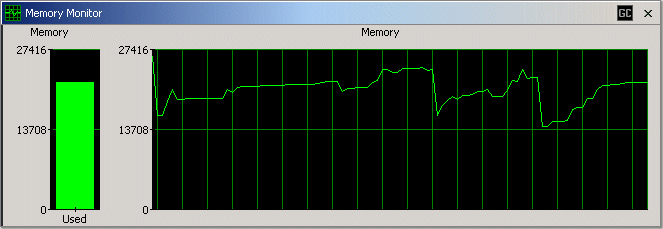

Memory Monitor The CodePro Java Memory Monitor view tracks memory usage within the environment. The bar graph on the left shows the current memory usage while the line graph on the right shows the memory usage history. Clicking anywhere on the graph will cause it to pause. Clicking again will cause it to continue tracking memory usage. The Memory Monitor may be invoked using a toolbar button or a menu item under the Window menu. A "GC" button is provided to trigger a global garbage collect. Options are provided via a preference page to set the graph update frequency as well as the colors used to draw the graph. |